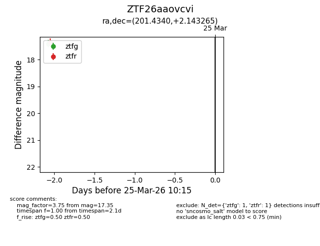
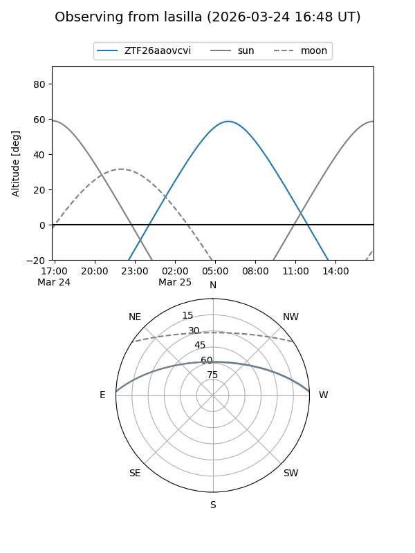
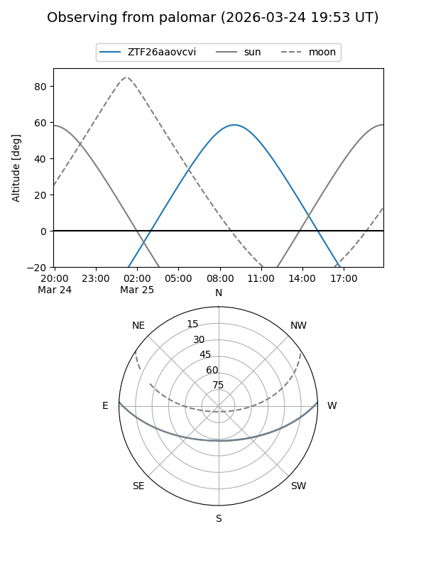

ZTF26aaovcvi
Target ZTF26aaovcvi at 2026-03-25 10:18
Aliases and brokers:
FINK: link
Lasair: link
ALeRCE: link
alt names
ZTF26aaovcvi (ztf,fink_ztf)
Coordinates:
equatorial (ra, dec) = 201.4340,+2.14326
equatorial (HMS+DMS) = 13:25:44.17,+02:08:35.75
galactic (l, b) = (322.5810,+63.69888)
Flags:
Photometry:
last ztfg=17.40, ztfr=17.35
1 ztfg, 1 ztfr detections
Lightcurve

Visibility


Additional plots